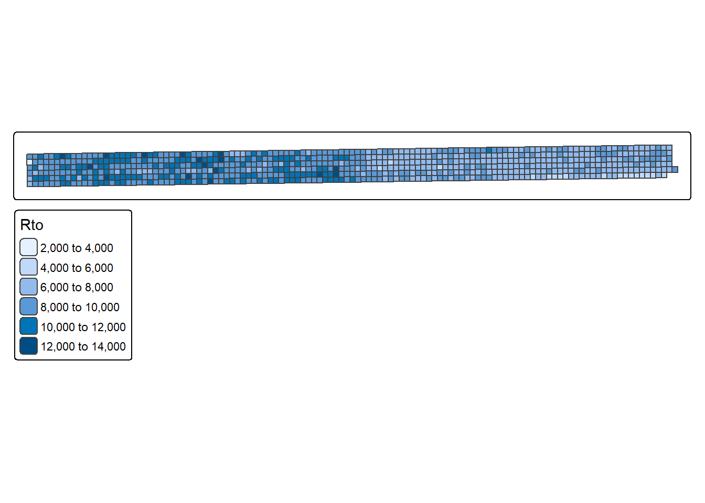
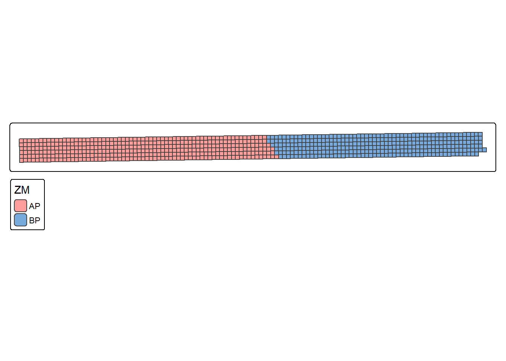
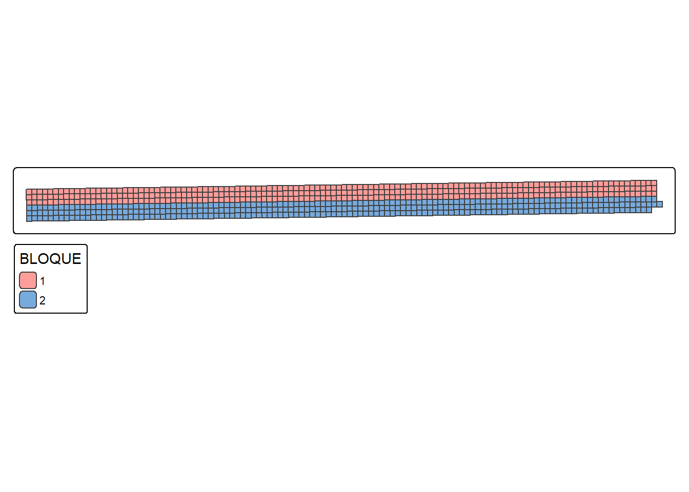
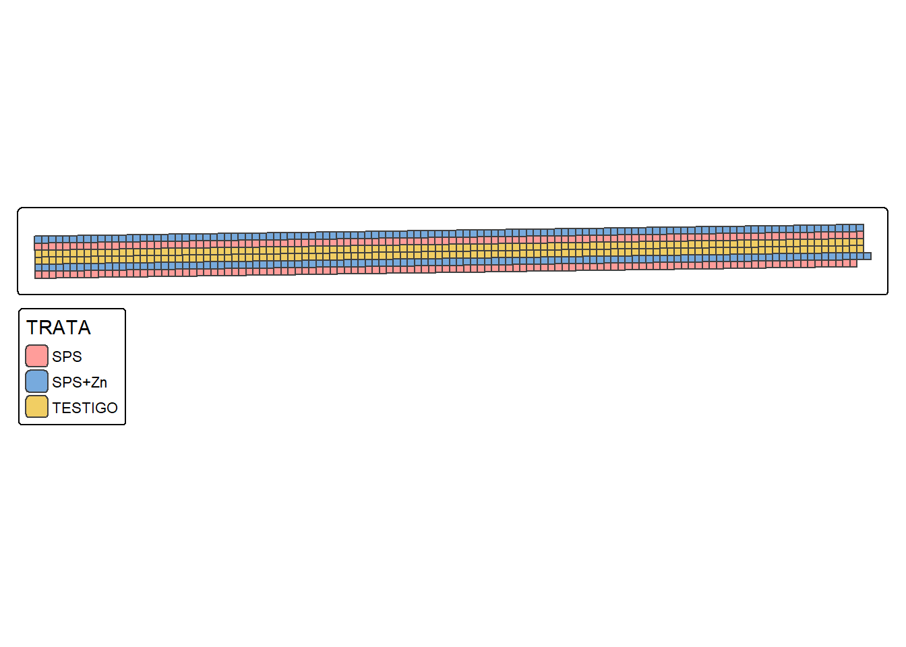
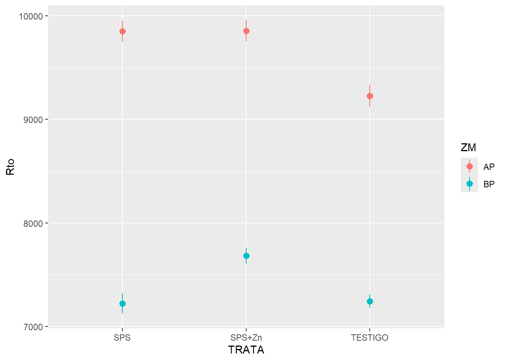
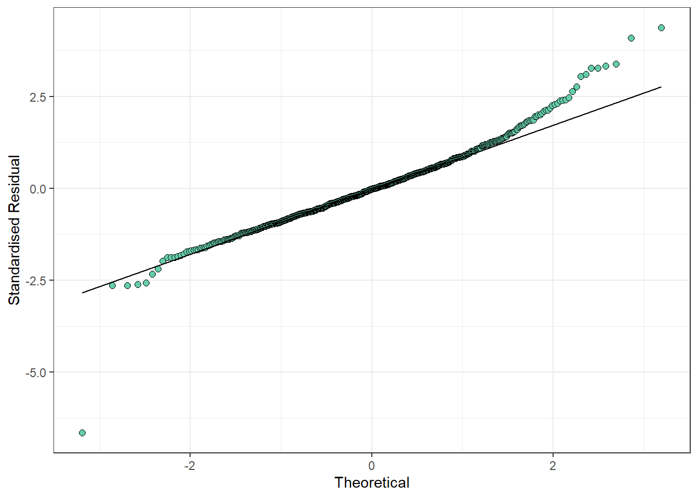
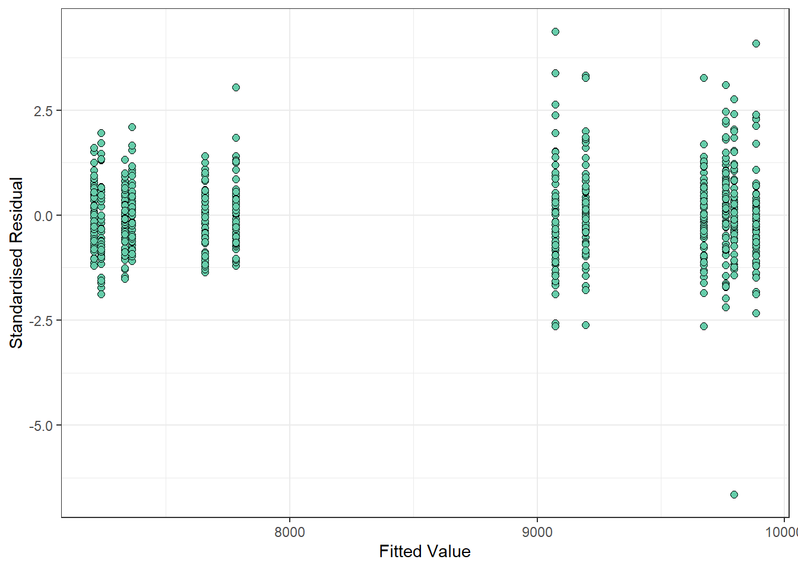
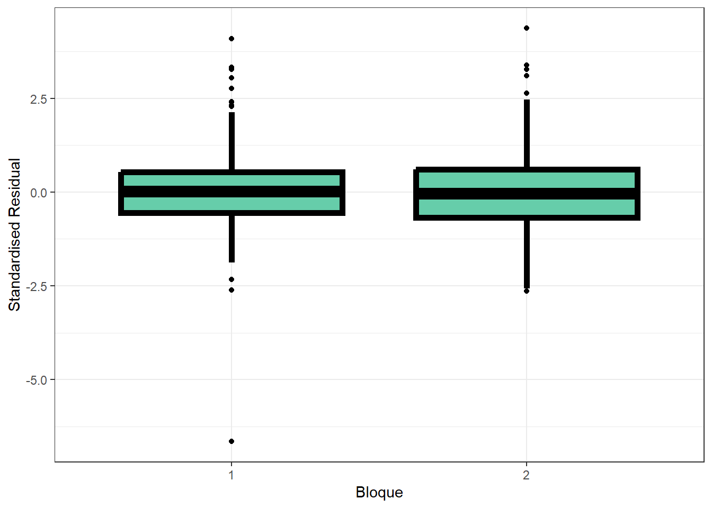
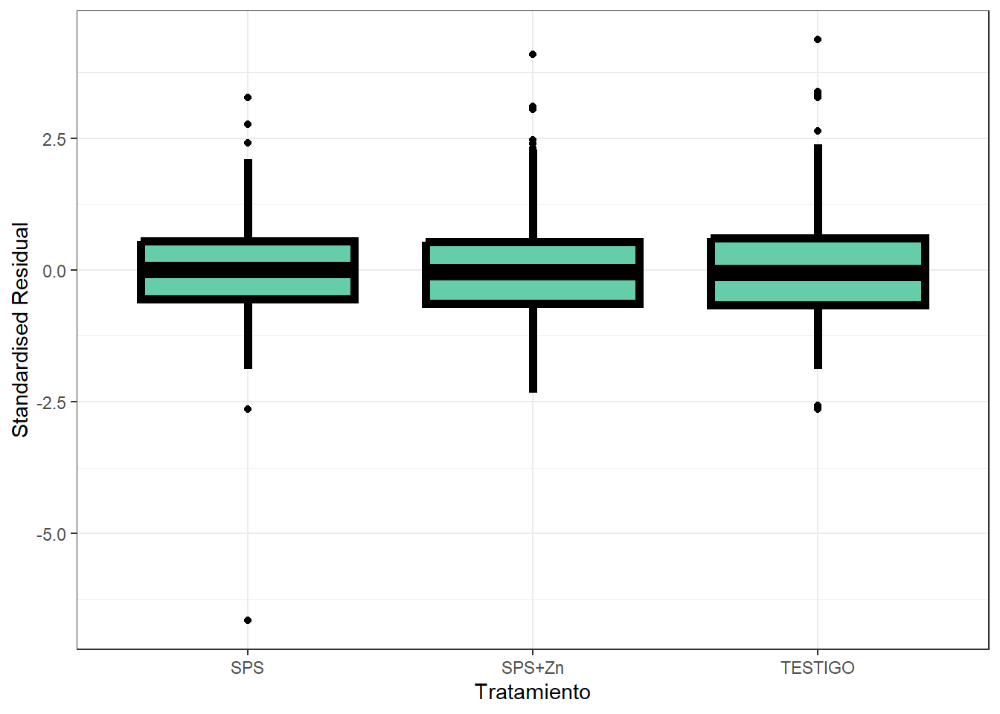
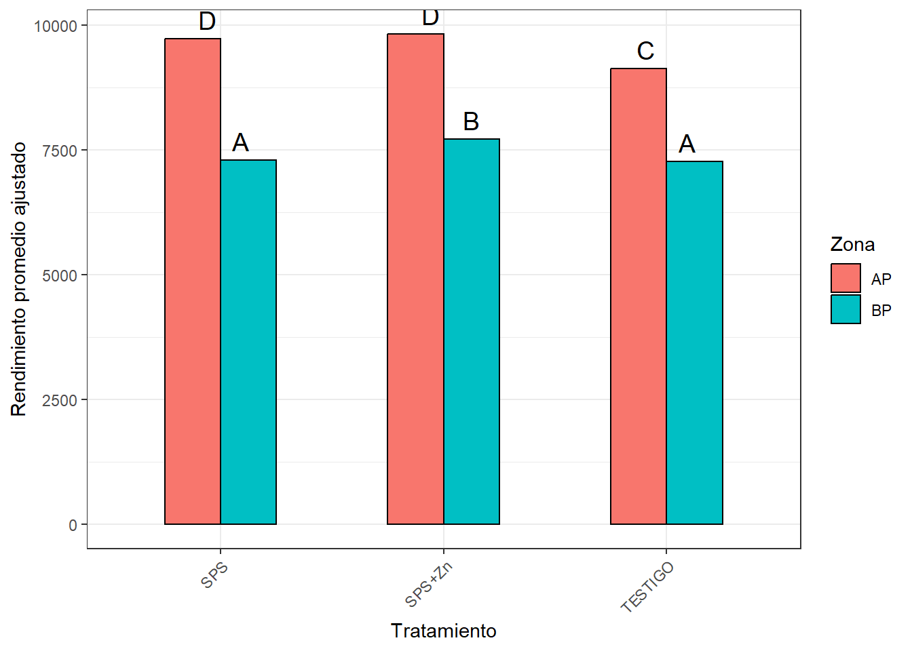

# Manejo de datos
library(dplyr)
# Manejo de datos espaciales
library(sf)
# Graficos
library(ggplot2)
# Mapas y graficos de datos espaciales
library(tmap)
# Ajuste de modelos Mixtos
library(nlme)
# Comparacion de medias
library(emmeans)
# library(multcomp)Ensayo Agricultura de Precisión - Clasificación
- Se evaluó el efecto de la fertilización fosforada (con y sin zinc) sobre el cultivo.
- Es de interés determinar si existe una respuesta diferencial entre zonas homogéneas, que justifique un manejo específico por ambiente.
Estadistica descriptiva
Se cargan y procesan los datos georreferenciados del ensayo. Se convierten las variables categóricas al formato adecuado para el análisis.
datos_ensayo_p <- read_sf('Datos/Dia 1/Ensayo_P/Ensayo_P.shp')
datos_ensayo_p <-
datos_ensayo_p |>
mutate(BLOQUE = as.character(BLOQUE))
datos_ensayo_p <-
cbind(datos_ensayo_p,
st_coordinates(st_centroid(datos_ensayo_p)))Warning: st_centroid assumes attributes are constant over geometrieshead(datos_ensayo_p)| ZM | TRATA | BLOQUE | Rto | X | Y | geometry |
|---|---|---|---|---|---|---|
| AP | SPS+Zn | 1 | 9911.484 | 383012.4 | 6285446 | POLYGON ((383010.3 6285449,… |
| AP | SPS+Zn | 1 | 9760.440 | 383016.6 | 6285447 | POLYGON ((383014.5 6285449,… |
| AP | SPS+Zn | 1 | 10258.884 | 383020.8 | 6285447 | POLYGON ((383018.7 6285449,… |
| AP | SPS+Zn | 1 | 8609.487 | 383025.0 | 6285447 | POLYGON ((383022.9 6285449,… |
| AP | SPS+Zn | 1 | 9766.482 | 383029.2 | 6285447 | POLYGON ((383027.1 6285449,… |
| AP | SPS+Zn | 1 | 10181.864 | 383033.4 | 6285447 | POLYGON ((383031.3 6285449,… |
tm_shape(datos_ensayo_p) +
tm_polygons(fill = 'Rto')
tm_shape(datos_ensayo_p) +
tm_polygons(fill = 'ZM',
fill.scale = tm_scale_categorical())
tm_shape(datos_ensayo_p) +
tm_polygons(fill = 'BLOQUE',
fill.scale = tm_scale_categorical())
tm_shape(datos_ensayo_p) +
tm_polygons(fill = 'TRATA',
fill.scale = tm_scale_categorical())
ggplot(datos_ensayo_p, aes(TRATA, Rto, color = ZM, group = ZM)) +
stat_summary()No summary function supplied, defaulting to `mean_se()`
Ajuste de modelo
Sin contemplar correlación espacial
Se ajusta un modelo lineal mixto considerando efectos aleatorios de bloque, pero asumiendo independencia entre unidades experimentales. Este modelo sirve como referencia para evaluar la mejora del ajuste al incorporar estructuras de correlación espacial.
mdl_errores_indep <- lme(Rto ~ ZM + TRATA + ZM*TRATA,
list(BLOQUE=pdIdent(~1)),
data = datos_ensayo_p)Contemplando correlación espacial
Se ajustan modelos mixtos incorporando estructuras de correlación espacial de diferentes tipos (exponencial, gaussiana, lineal, esférica y racional cuadrática) entre unidades experimentales, usando las coordenadas X e Y. El objetivo es capturar la dependencia espacial entre observaciones cercanas.
mdl_errores_corr_exp <- lme(Rto ~ ZM + TRATA + ZM*TRATA,
random = list(BLOQUE=pdIdent(~1)),
correlation = corExp(form=~ X + Y,
nugget=FALSE,
metric='euclidean'),
data = datos_ensayo_p)
mdl_errores_corr_gau <- lme(Rto ~ ZM + TRATA + ZM*TRATA,
random = list(BLOQUE=pdIdent(~1)),
correlation = corGaus(form=~ X + Y,
nugget=FALSE,
metric='euclidean'),
data = datos_ensayo_p)
mdl_errores_corr_lin <- lme(Rto ~ ZM + TRATA + ZM*TRATA,
random = list(BLOQUE=pdIdent(~1)),
correlation = corLin(form=~ X + Y,
nugget=FALSE,
metric='euclidean'),
data = datos_ensayo_p)
mdl_errores_corr_spher <- lme(Rto ~ ZM + TRATA + ZM*TRATA,
random = list(BLOQUE=pdIdent(~1)),
correlation = corSpher(form=~ X + Y,
nugget=FALSE,
metric='euclidean'),
data = datos_ensayo_p)
mdl_errores_corr_rationalquad<- lme(Rto ~ ZM + TRATA + ZM*TRATA,
random = list(BLOQUE=pdIdent(~1)),
correlation = corRatio(form=~ X + Y,
nugget=FALSE,
metric='euclidean'),
data = datos_ensayo_p)Comparacion de modelos
Se comparan los distintos modelos ajustados usando los criterios AIC y BIC. Estos indicadores permiten evaluar el compromiso entre ajuste y complejidad del modelo. Se seleccionará el modelo con menor AIC y BIC, siempre que sea consistente con la evaluación de los residuos.
data.frame(
Modelo = c('Errores Independientes',
'Correlacion Espacial (Exp)',
'Correlacion Espacial (Gaussian)',
'Correlacion Espacial (Linear)',
'Correlacion Espacial (Spheric)',
'Correlacion Espacial (Rational Quadratic)'),
AIC = c(AIC(mdl_errores_indep),
AIC(mdl_errores_corr_exp),
AIC(mdl_errores_corr_gau),
AIC(mdl_errores_corr_lin),
AIC(mdl_errores_corr_spher),
AIC(mdl_errores_corr_rationalquad)),
BIC = c(BIC(mdl_errores_indep),
BIC(mdl_errores_corr_exp),
BIC(mdl_errores_corr_gau),
BIC(mdl_errores_corr_lin),
BIC(mdl_errores_corr_spher),
BIC(mdl_errores_corr_rationalquad))
) |>
arrange(AIC, BIC)| Modelo | AIC | BIC |
|---|---|---|
| Correlacion Espacial (Rational Quadratic) | 11694.42 | 11735.41 |
| Correlacion Espacial (Exp) | 11697.09 | 11738.08 |
| Correlacion Espacial (Gaussian) | 11714.57 | 11755.56 |
| Correlacion Espacial (Spheric) | 11716.16 | 11757.15 |
| Correlacion Espacial (Linear) | 11722.57 | 11763.56 |
| Errores Independientes | 11793.66 | 11830.10 |
Modelo final
El modelo con estructura de correlación racional cuadrática presentó el mejor ajuste según AIC y BIC. A continuación se presentan gráficos diagnósticos para evaluar los residuos del modelo seleccionado: QQ-plot, residuos vs valores ajustados, y distribución de residuos según bloque y tratamiento.
datos_ensayo_p$resid_corr_rationalquad <-
residuals(mdl_errores_corr_rationalquad, type = 'normalized')
datos_ensayo_p$pred_corr_rationalquad <-
predict(mdl_errores_corr_rationalquad)
ggplot(datos_ensayo_p, aes(sample = resid_corr_rationalquad)) +
geom_qq(
colour = "black",
fill = "aquamarine3",
size = 2,
shape = 21
) +
geom_qq_line() +
theme_bw() +
labs(y = "Standardised Residual", x = "Theoretical")
ggplot(data = datos_ensayo_p,
aes(x = pred_corr_rationalquad, y = resid_corr_rationalquad)
) +
geom_point(
colour = "black",
fill = "aquamarine3",
size = 2,
shape = 21
) +
theme_bw() +
labs(y = "Standardised Residual", x = "Fitted Value")
ggplot(data = datos_ensayo_p,
aes(x = BLOQUE, y = resid_corr_rationalquad)
) +
geom_boxplot(
colour = "black",
fill = "aquamarine3",
size = 2,
shape = 21
) +
theme_bw() +
labs(y = "Standardised Residual", x = "Bloque")
ggplot(data = datos_ensayo_p,
aes(x = TRATA, y = resid_corr_rationalquad)
) +
geom_boxplot(
colour = "black",
fill = "aquamarine3",
size = 2,
shape = 21
) +
theme_bw() +
labs(y = "Standardised Residual", x = "Tratamiento")



joint_tests(mdl_errores_corr_rationalquad)| model term | df1 | df2 | F.ratio | p.value | |
|---|---|---|---|---|---|
| 1 | ZM | 1 | 701 | 209.302 | 0.0000000 |
| 3 | TRATA | 2 | 701 | 15.049 | 0.0000004 |
| 2 | ZM:TRATA | 2 | 701 | 3.988 | 0.0189525 |
modelb <- emmeans(mdl_errores_corr_rationalquad, c("ZM", "TRATA"), type = "response")
comparaciones <-
multcomp::cld(modelb, Letters = LETTERS, alpha = 0.05) |>
as.data.frame(row.names = NULL) |>
dplyr::rename(mean = emmean)
comparaciones| ZM | TRATA | mean | SE | df | lower.CL | upper.CL | .group | |
|---|---|---|---|---|---|---|---|---|
| 6 | BP | TESTIGO | 7271.177 | 161.8106 | 1 | 5215.178 | 9327.175 | A |
| 2 | BP | SPS | 7300.279 | 164.2652 | 1 | 5213.092 | 9387.467 | A |
| 4 | BP | SPS+Zn | 7719.393 | 163.0536 | 1 | 5647.601 | 9791.186 | B |
| 5 | AP | TESTIGO | 9133.833 | 151.6987 | 1 | 7206.318 | 11061.347 | C |
| 1 | AP | SPS | 9733.552 | 153.8408 | 1 | 7778.818 | 11688.285 | D |
| 3 | AP | SPS+Zn | 9822.354 | 154.1625 | 1 | 7863.534 | 11781.175 | D |
ggplot(comparaciones, aes(x = TRATA, y = mean, fill = ZM)) +
geom_col(
position = position_dodge(width = 0.5),
width = 0.5,
color = "black") +
geom_text(aes(label = .group),
position = position_dodge(width = 0.5),
vjust = -0.5, hjust = 0.5, size = 5) +
labs(
x = "Tratamiento",
y = "Rendimiento promedio ajustado",
fill = "Zona"
) +
theme_bw() +
theme(
axis.text.x = element_text(angle = 45, hjust = 1),
plot.title = element_text(hjust = 0.5)
)